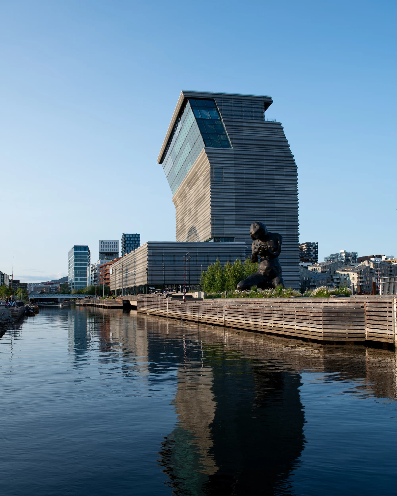
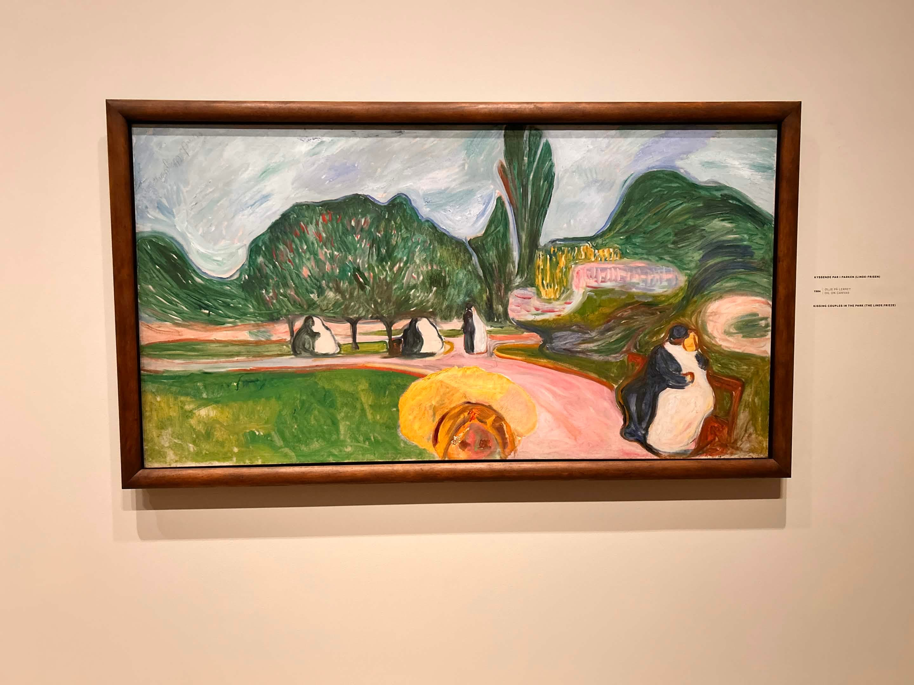
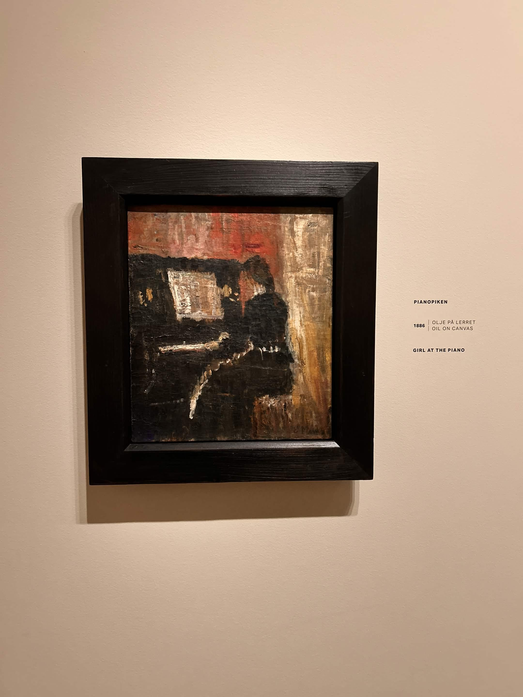
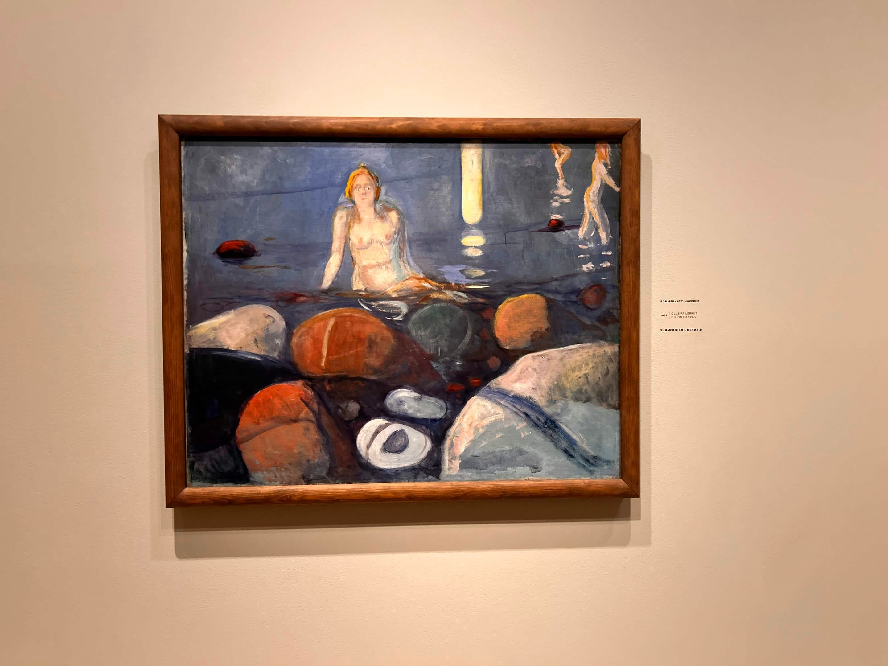
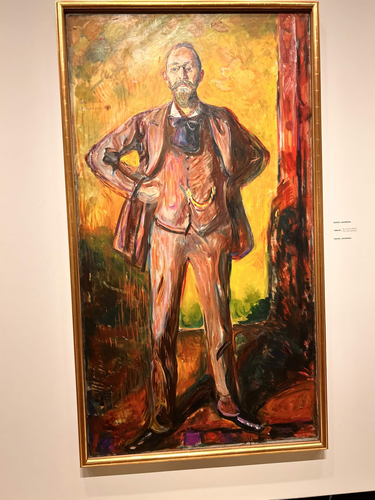
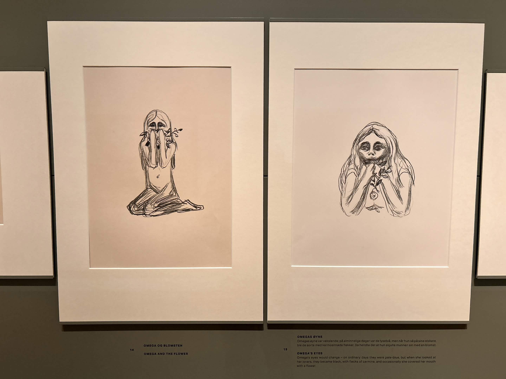

MUNCH - Museet
Om Munchmuseet:
Munchmuseet i Oslo er et museum etablert i 1963 som er dedikert til Edvard Munchs liv og kunst. Museet huser en enorm samling av hans malerier, grafikk og tegninger, og gir besøkende muligheten til å utforske hans kunstneriske utvikling og innflytelse på moderne kunst.
Munchmuseet tilbyr også midlertidige utstillinger, pedagogiske programmer og arrangementer som fremmer forståelsen av Munchs kunst og åpner opp for en mer variert demografi.

Foto: Munchmuseet i Oslo
Edvard Munchs kunstverk er utstilt på Munchmuseet i Oslo, som er dedikert til hans liv og arbeid. Museet huser en omfattende samling av hans malerier, grafikk og tegninger, og gir besøkende muligheten til å utforske hans kunstneriske utvikling og innflytelse på moderne kunst.
Munchmuseet tilbyr også midlertidige utstillinger, pedagogiske programmer og arrangementer som fremmer forståelsen av Munchs kunst og hans betydning i kunsthistorien.

Et av Munchs landskapsmotiver vises i museets samlinger.

«Girl at the Piano» fra 1886, malt i olje på lerret.

Et nattlig motiv med vann, steiner og en lys kvinnefigur.

Munchs skisser og studier viser arbeidet bak de ferdige kunstverkene.

Et portrett der Munch bruker sterke farger og tydelige penselstrøk.

Omega er den siste bokstaven i det greske alfabetet og en del av Munchs grafikkmappe «Alfa og Omega». Bildet viser to uttrykksfulle framstillinger av menneskelig angst og sårbarhet.
Besøksinformasjon:
Adresse: Edvard Munchs Plass 1, 0194 Oslo
Åpningstider: onsdag - lørdag: 10:00 - 21:00 (mandag, tirsdag og søndag: 10:00 - 18:00)
Inngangsbillett: Voksne: 200 NOK, Under 25: 100 NOK, Barn under 17 år: Gratis
Mitt besøk til Munchmuseet:
Jeg besøkte Munchmuseet i Oslo for å få en dypere forståelse av Edvard Munchs kunst og hans betydning i kunsthistorien. Museet var imponerende, med en god atmosfære, tilfredstillende fasiliteter og fin kafè. Bygget i seg selv er enormt og rommer over 26 000 kunstverk fordelt på 13 etasjer.
Jeg ble spesielt fascinert av hans grafikk mappe som heter "Alfa & Omega". Igjennom litografi klarer han å formidle komplekse emosjoner og tanker på en måte som er både kraftfull og visuelt imponerende.
Munch museet kan anbefales til alle som er interessert i kunst og kultur, det var lærerikt og underholdende å få virkelig oppleve talentet til en såpass annerkjent norsk kunstner.